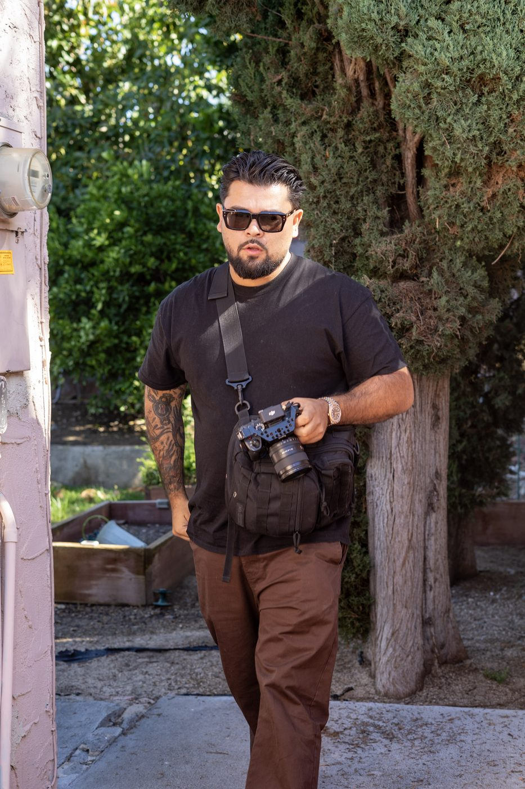
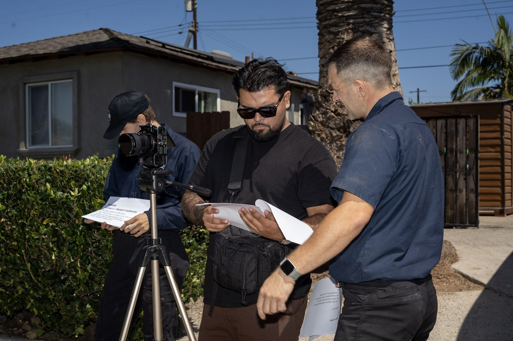
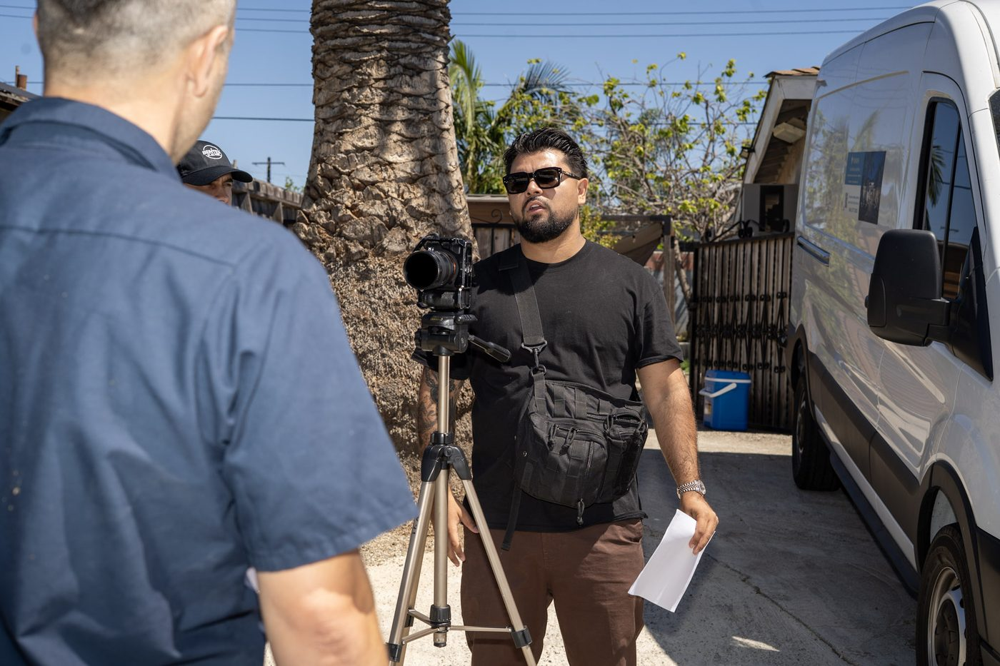
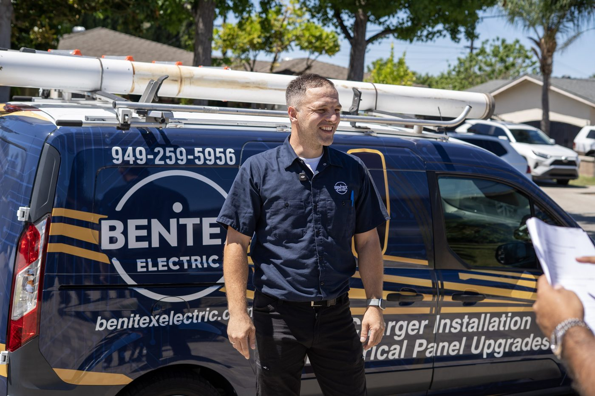

We run the ads, vet every homeowner before they reach you, and warm them before the inspection. You spend your time bidding real projects with real budgets.
Only 3 companies in Orange County will be selected.
Answer a few quick questions below (takes about 60 seconds), then pick a time. We will map out exactly how many jobs your calendar can hold, and how we would fill it.
The difference is not how many leads arrive. It is what happens to them before they reach you.
Not mockups. Real ads we shot, cut and ran. These are from other trades, because the construction ones are being built right now with the first three companies.




I'm Jonathan, and I run Mindframe.
I have spent five years behind a camera and running paid ads for service businesses. I built the same system in a few different industries, and now construction.
I'm the one who shows up, I'm the one you get on the phone, and I'm the one looking over your account.
I've spent years building my reputation in LA, and I'm not dropping it anytime soon.
The application takes about two minutes. If you fit, we will map out how many projects your calendar can hold and how we would fill it.
Apply For One Of The Three →